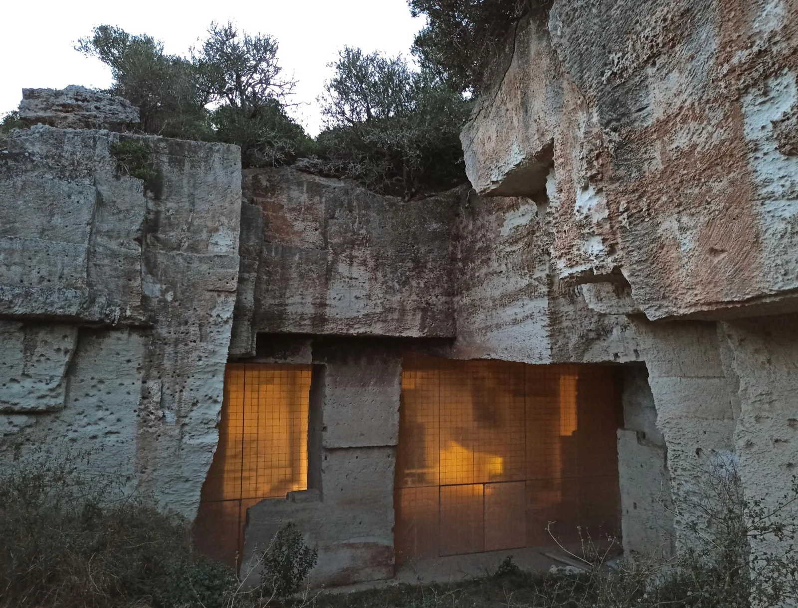
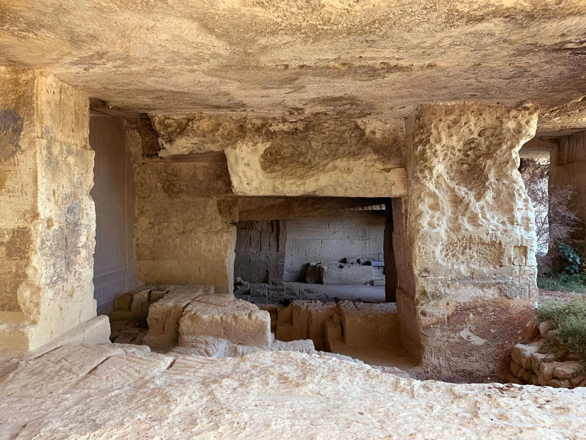
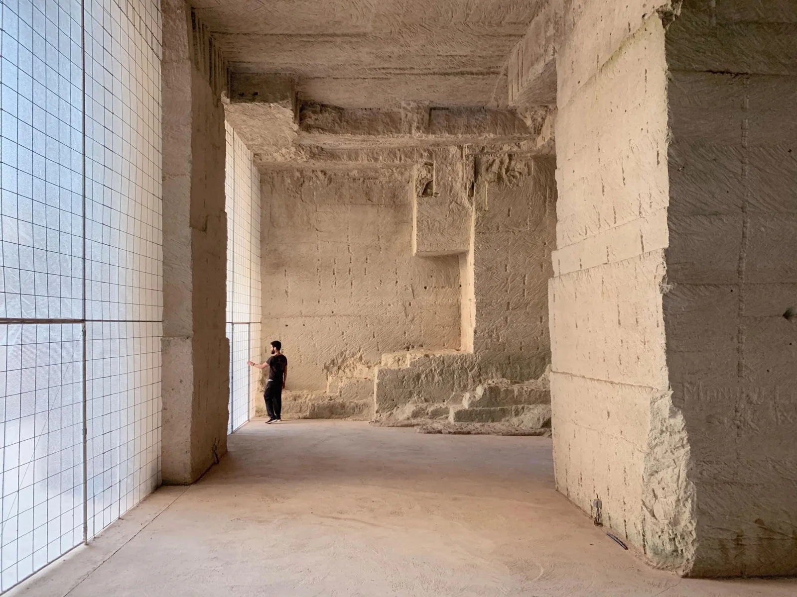
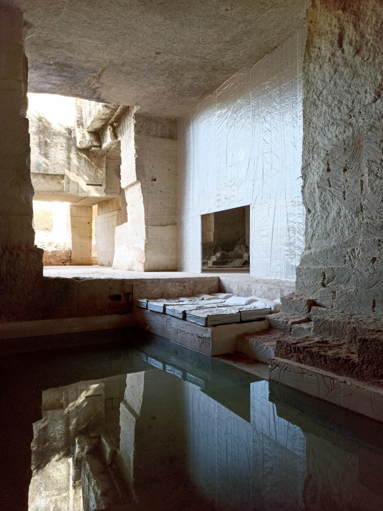
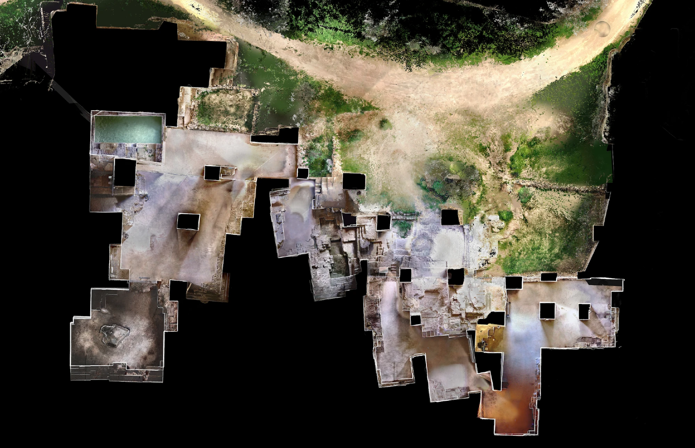
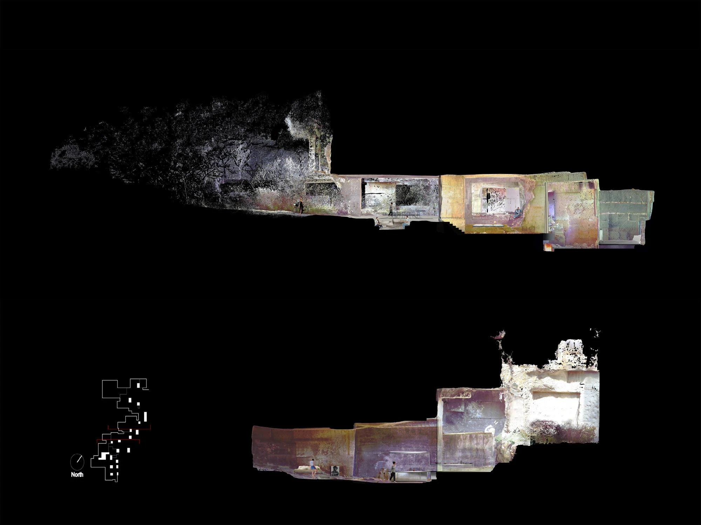
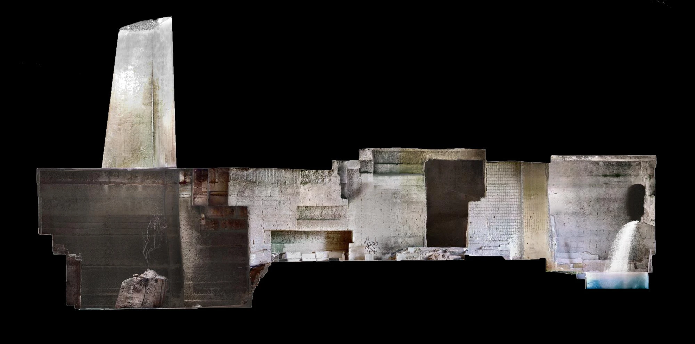
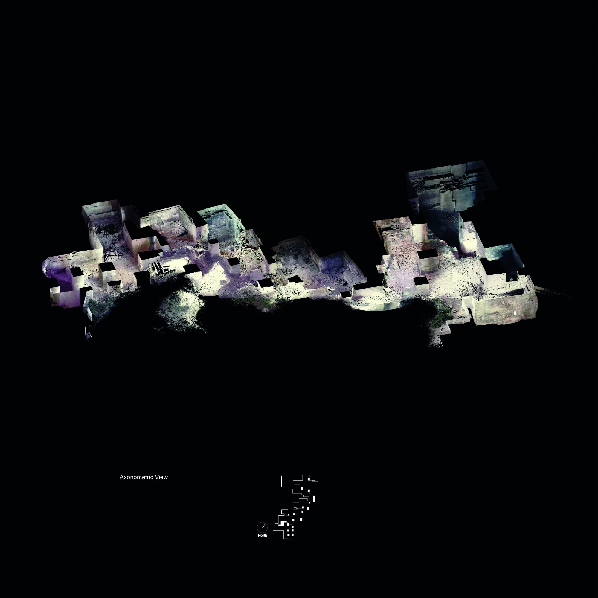

House in a former quarry · 2020
Ca'n Terra
Ensamble Studio / Antón García-Abril and Débora Mesa
Menorca, Spain
Living, sleeping and cooking occupy the quarry's existing spaces. Curtains introduce privacy without subdividing the stone chambers, and new openings bring daylight and fresh air into the deeper interior.
The architects surveyed the abandoned quarry digitally before making selective cuts for three rooflights. New slabs accommodate services and follow the cave's topography; solar panels, a cistern and a septic tank support off-grid occupation. The project begins with found space rather than a newly drawn envelope.


Relevant connections
Included as an architectural reference for adaptive reuse and domestic space; no mode of work is assigned.
Images and drawings / 08













